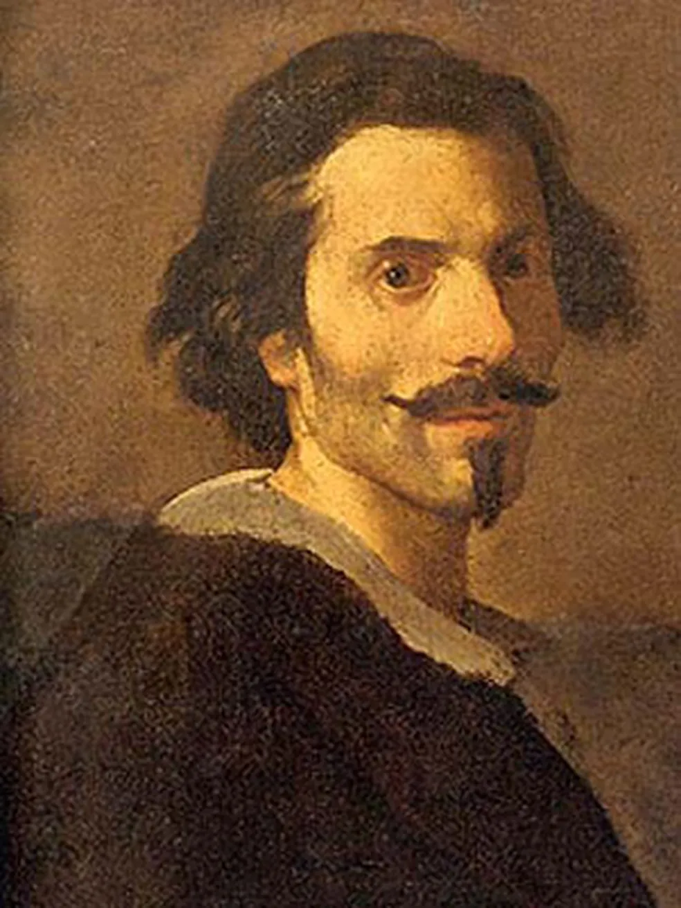
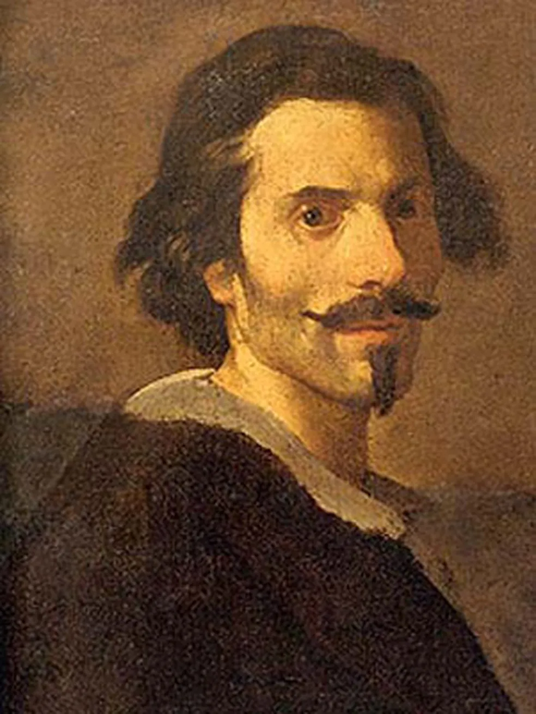

Caravaggio
Vida e Obra:
Michelangelo Merisi (ou Amerighi), conhecido como Caravaggio (Caravaggio, 29 de setembro de 1571 — Porto Ercole, 18 de julho de 1610), foi um dos mais notados pintores italianos, atuante em Roma, Nápoles, Malta e Sicília, entre 1593 e 1610. Seu trabalho exerceu influência importante no estilo barroco, estilo do qual foi o primeiro grande representante. Caravaggio era o nome da aldeia natal da sua família e foi escolhido como seu nome artístico. Exceto em suas primeiras obras, Caravaggio pintou fundamentalmente temas religiosos. No entanto, foram várias as vezes em que as suas pinturas feriam as susceptibilidades dos seus clientes. Em vez de adotar nas suas pinturas belas figuras etéreas, delicadas, para representar acontecimentos e personagens da Bíblia, ele preferia escolher, por entre o povo, modelos humanos tais como prostitutas, crianças de ruas e mendigos, que posavam como personagens para as suas obras. Caravaggio procurou a realidade palpável e concreta da representação. Utilizou como modelos figuras humanas, sem qualquer receio de representar a feiura, a deformidade em cenas provocadoras, características essas que distinguem as suas obras. Tudo isso chocou os seus contemporâneos, pela rudez das suas pinturas. Dos efeitos que Caravaggio dava aos quadros, originou-se o tenebrismo, radicalização do Chiaroscuro, em que os tons terrosos contrastam com os fortes pontos de luz.
PINTURAS MITOLÓGICAS
PINTURAS RELIGIOSAS
PINTURAS DE GÊNERO
NOTAS FINAIS
 

Michelangelo Merisi nasceu no Ducado de Milão, onde seu pai, Fermo Merisi, era administrador e arquiteto-decorador do marquês de Caravaggio. Ele tinha apenas seis anos quando a peste bubônica matou praticamente todos os homens de sua família, incluindo seu pai. Ele cresceu contencioso e agressivo.[3] Michelangelo Merisi surgiu na cena artística romana em 1600 e, desde então, nunca lhe faltou comissões ou patronos. Porém ele lidou com seu sucesso de maneira atroz. Uma nota precocemente publicada por Floris Claes van Dijk sobre ele, em 1604, descrevia seu estilo de vida três anos antes: "após uma quinzena de trabalho, ele irá vagar por um mês ou dois com uma espada a seu lado e um servo o seguindo, de um salão de baile para outro, sempre pronto para se envolver em alguma luta ou discussão, de tal maneira que é bastante torpe acompanhá-lo".